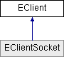

TWS/Gateway client class This client class contains all the available methods to communicate with IB. Up to 32 clients can be connected to a single instance of the TWS/Gateway simultaneously. From herein, the TWS/Gateway will be referred to as the Host.
Inheritance diagram for EClient:
